library(ggplot2)
library(dplyr)
Attaching package: 'dplyr'The following objects are masked from 'package:stats':
filter, lagThe following objects are masked from 'package:base':
intersect, setdiff, setequal, unionMembandingkan Rata-rata Dua Kelompok
Tim Pengampu Biostatistika
June 1, 2026
Setelah sesi ini, mahasiswa akan mampu:
| Mengetahui | Memahami | Melakukan |
|---|---|---|
| Asumsi uji-t (normalitas, homogenitas varians) | Uji-t mengukur berapa standard error yang memisahkan dua rata-rata | Melakukan independent t-test dengan t.test() |
| Interpretasi nilai-t, p-value, dan Cohen’s d | p-value adalah probabilitas melihat perbedaan sebesar itu secara kebetulan | Menghitung statistik deskriptif per kelompok |
| Perbedaan uji-t satu sampel, paired, dan independent | Effect size (Cohen’s d) memberikan konteks praktis di luar signifikansi statistik | Memvisualisasikan hasil uji-t dengan ggplot2 |
| Interpretasi hasil uji-t dalam konteks biologis |
R memiliki distribusi-t Student yang mirip dengan distribusi normal tetapi memiliki ekor lebih tebal, terutama dengan derajat kebebasan (df) kecil.
Attaching package: 'dplyr'The following objects are masked from 'package:stats':
filter, lagThe following objects are masked from 'package:base':
intersect, setdiff, setequal, union# Membuat vektor berisi 100 nilai antara -4 dan 4
n <- 100
x <- seq(-4, 4, length = n)
# Membuat data frame untuk ggplot2
df_raw <- data.frame(Index = 1:n, Value = x)
# Plot menggunakan ggplot2
ggplot(df_raw, aes(x = Index, y = Value)) +
geom_point(color = "blue") +
labs(
title = "Scatter Plot Nilai dari -4 sampai 4",
x = "Index",
y = "Value"
) +
theme_minimal()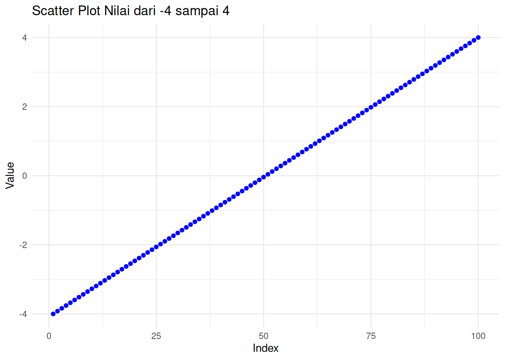
Untuk menemukan nilai probability density function (pdf) dari distribusi-t, gunakan fungsi dt() dalam R.
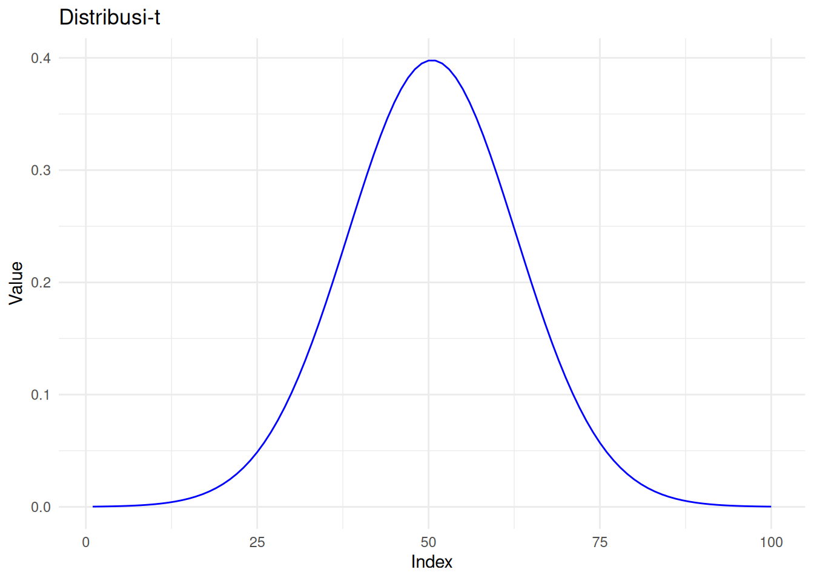
# Langkah 1: Sampling dari distribusi-t
set.seed(123)
sample_size <- 30
sample_data <- rt(sample_size, df = n - 1)
sample_mean <- mean(sample_data)
# Langkah 2: Plot dengan rug (tanda garis horizontal menunjukkan nilai sample)
tplot <- ggplot(df_T, aes(x = x, y = y)) +
geom_line(color = "blue", size = 1.2) +
geom_vline(xintercept = sample_mean, color = "red", linetype = "dashed", size = 1) +
geom_rug(data = data.frame(x = sample_data), aes(x = x), inherit.aes = FALSE, sides = "b", color = "black", alpha = 0.5) +
annotate("text", x = sample_mean, y = max(y) * 0.9,
label = paste0("Mean = ", round(sample_mean, 2)), color = "red", hjust = -0.1) +
labs(title = "Distribusi-t dengan Rata-rata Sample",
x = "t-value", y = "Density") +
theme_minimal()Warning: Using `size` aesthetic for lines was deprecated in ggplot2 3.4.0.
ℹ Please use `linewidth` instead.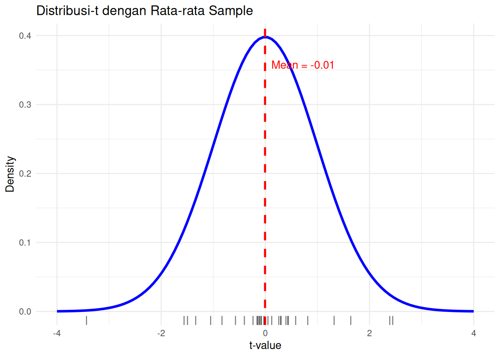
# Langkah 1: Generate multiple samples
set.seed(123)
sample_size <- 30
n_repeats <- 5
# Simpan semua data sample dengan ID sample
samples <- lapply(1:n_repeats, function(i) {
data.frame(Sample = paste0("Sample ", i),
Value = rt(sample_size, df = n - 1))
}) %>% bind_rows()
# Hitung rata-rata untuk setiap sample
sample_means <- samples %>%
group_by(Sample) %>%
summarise(mean = mean(Value))
# Langkah 2: Base plot dengan distribusi-t
p <- ggplot(df_T, aes(x = x, y = y)) +
geom_line(color = "blue", size = 1.2) +
labs(title = "Distribusi-t dengan Multiple Sample Rugs dan Means",
x = "t-value", y = "Density") +
theme_minimal()
# Langkah 3: Tambahkan rugs dan means
# Kita akan loop melalui setiap group sample dan menambahkannya
for (i in seq_len(n_repeats)) {
sample_name <- paste0("Sample ", i)
sample_vals <- samples %>% filter(Sample == sample_name)
sample_mean <- sample_means %>% filter(Sample == sample_name) %>% pull(mean)
# Tambahkan rug dan mean line
p <- p +
geom_rug(data = sample_vals, aes(x = Value), inherit.aes = FALSE,
sides = "b", alpha = 0.4, color = scales::hue_pal()(n_repeats)[i]) +
geom_vline(xintercept = sample_mean, color = scales::hue_pal()(n_repeats)[i],
linetype = "dashed", size = 0.8)
}
# Print plot
p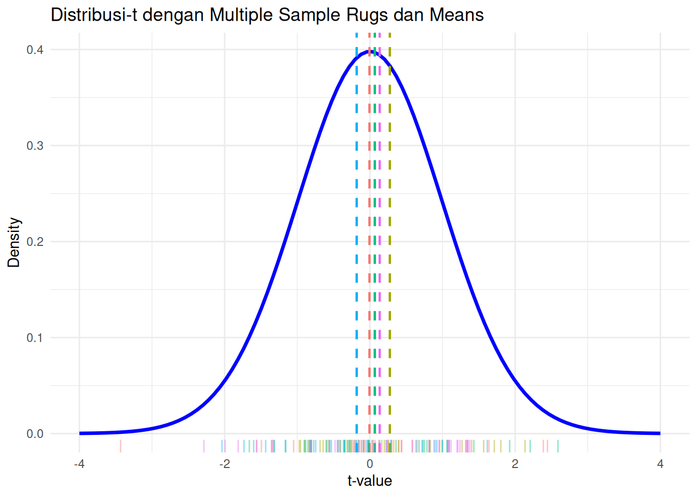
Mengapa distribusi-t penting? Semakin besar derajat kebebasan, semakin dekat distribusi-t dengan distribusi normal. Dalam praktik, ketika sample size > 30, distribusi-t dan normal hampir identik.
# Membuat data frame dengan semua distribusi
df <- data.frame(
x = rep(x, times = 4),
density = c(
dt(x, df = 2),
dt(x, df = 8),
dt(x, df = 32),
dnorm(x)
),
distribution = factor(rep(c("df = 2", "df = 8", "df = 32", "Normal"), each = length(x)))
)
# Plot
ggplot(df, aes(x = x, y = density, color = distribution)) +
geom_line(linewidth = 1.2) +
labs(
title = "Perbandingan Distribusi-t",
x = "Nilai-t",
y = "Density",
color = "Distribusi"
) +
theme_minimal()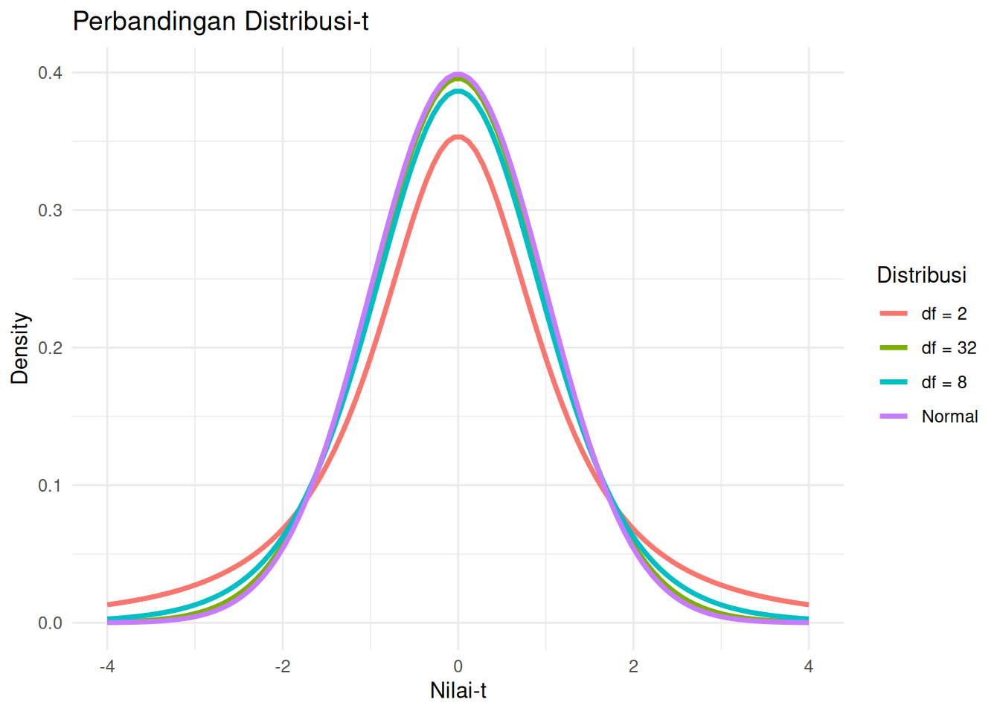
flowchart LR
Hulu["🏞️ Danau Hulu"] --> Pabrik["🏭 Pabrik"] --> Hilir["🏞️ Danau Hilir"]
style Hulu fill:#e1f5fe
style Pabrik fill:#fff3e0
style Hilir fill:#ffebee
Sekelompok ahli biologi lingkungan sedang melakukan studi tentang dampak ekologis yang mungkin terjadi dari pabrik manufaktur lokal. Pabrik ini terletak di antara dua danau kecil yang merupakan bagian dari sistem sungai yang sama:
Untuk menilai dampak potensial, tim mengumpulkan sampel ikan dari kedua danau. Untuk setiap ikan, mereka mencatat:
Para ilmuwan ingin menentukan apakah populasi ikan di danau Hilir menunjukkan perbedaan yang signifikan dalam ukuran dibandingkan dengan danau Hulu. Perbedaan ukuran ikan (panjang atau berat) dapat menjadi indikator stres lingkungan, ketersediaan makanan, atau kontaminasi.
Think-aloud (I Do): “Saya memiliki data dari dua kelompok independen — ikan dari danau Hulu dan danau Hilir. Saya ingin membandingkan rata-rata panjang ikan antara kedua danau. Uji-t independent adalah pilihan yang tepat karena saya membandingkan dua kelompok yang berbeda.”
Latihan Retrieval: Sebelum melanjutkan, coba ingat kembali: - Apa fungsi
read.delim()dalamR? - Bagaimana cara melihat struktur data? - Tuliskan kodenya!
Lake Length_cm Weight_g
1 Upstream 26.3 318.7
2 Upstream 27.3 347.7
3 Upstream 32.7 332.6
4 Upstream 28.2 329.6
5 Upstream 28.4 311.5
6 Upstream 33.1 338.6# A tibble: 2 × 6
Lake mean sd n se df
<chr> <dbl> <dbl> <int> <dbl> <dbl>
1 Downstream 28.4 2.72 50 0.385 49
2 Upstream 28.1 2.78 50 0.394 49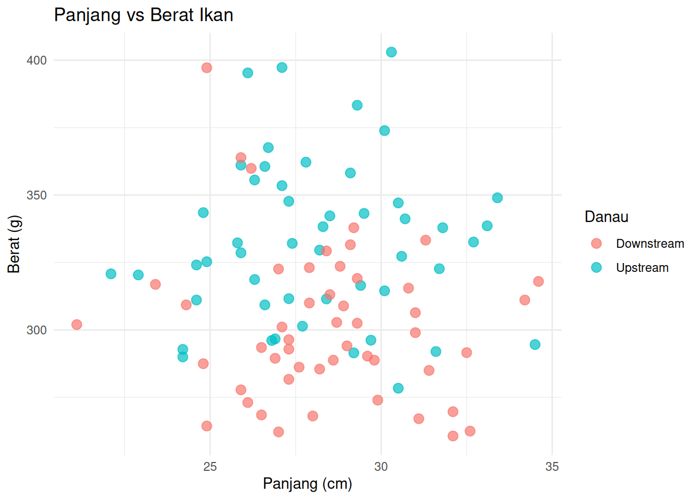
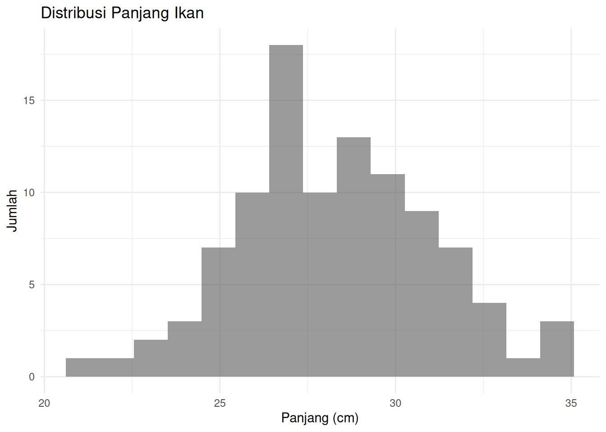
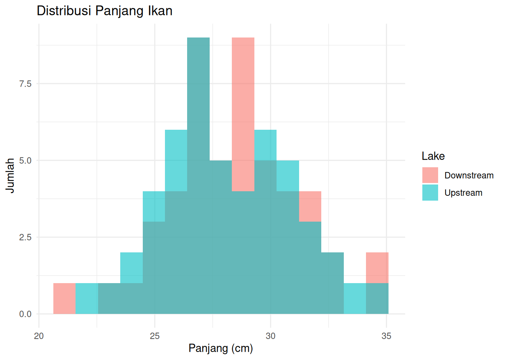
# Ringkaskan data untuk mendapatkan mean dan standard error per group
weight_summary <- fish_data %>%
group_by(Lake) %>%
summarise(
mean_weight = mean(Length_cm),
se_weight = sd(Length_cm) / sqrt(n())
)
# Bar plot dengan error bars
ggplot(weight_summary, aes(x = Lake, y = mean_weight, fill = Lake)) +
geom_col(width = 0.6) +
geom_errorbar(aes(ymin = mean_weight - se_weight,
ymax = mean_weight + se_weight),
width = 0.2) +
labs(title = "Rata-rata Panjang Ikan per Danau",
x = "Jenis Danau",
y = "Panjang (cm)") +
theme_minimal()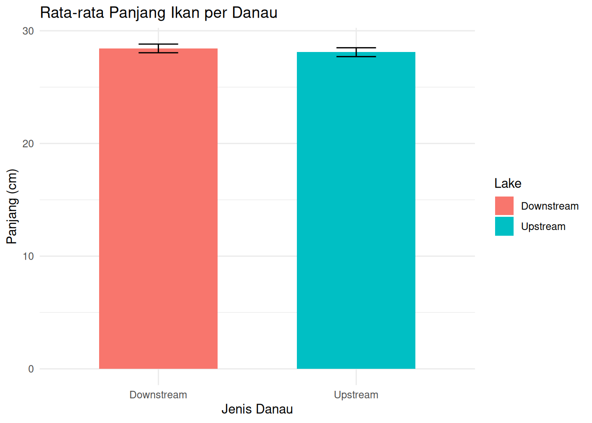
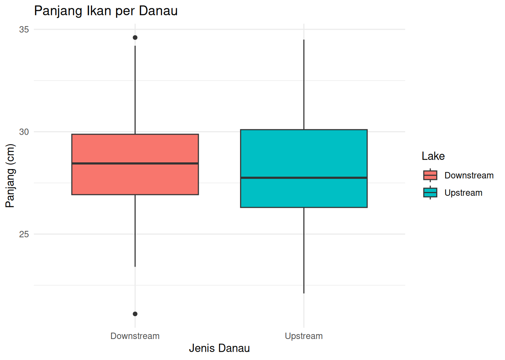
# LATIHAN: BUAT BARPLOT BERAT IKAN
# Ringkaskan data untuk mendapatkan mean dan standard error per group
# Hint 1: Gunakan code weight_summary di atas sebagai template
# Hint 2: Ganti Length_cm menjadi Weight_g
# Hint 3: Gunakan geom_col() untuk barplot dan geom_errorbar() untuk error bars
# Bar plot dengan error barsSebelum melanjutkan, coba jawab: Anda menjalankan uji-t dan mendapatkan output:
t = 2.45, df = 98, p = 0.016. Apa kesimpulan Anda?
- Tidak ada perbedaan signifikan karena p > 0.01
- Ada perbedaan signifikan karena p < 0.05
- Sample size terlalu kecil untuk membuat kesimpulan
- Anda perlu menjalankan ANOVA, bukan uji-t
Jawaban: B. Karena p = 0.016 < 0.05, kita menolak hipotesis nol dan menyimpulkan ada perbedaan signifikan.
Yang Anda uji: > Apakah rata-rata panjang ikan di area Hulu secara signifikan berbeda dari area Hilir.
Kita akan menghitung t-statistic → jumlah standard errors yang memisahkan rata-rata.
t_value yang lebih besar → bukti perbedaan yang lebih kuat.
Nilai p memberikan probabilitas melihat perbedaan seperti itu secara kebetulan. > - p < 0.05 → perbedaan secara statistik signifikan > - p ≥ 0.05 → tidak secara statistik signifikan
Cohen’s d memberi tahu Anda seberapa besar perbedaan tersebut:
| d | Interpretasi |
|---|---|
| 0.2 | Dampak kecil |
| 0.5 | Dampak sedang |
| 0.8+ | Dampak besar |
Meskipun p < 0.05, Cohen’s d yang kecil mungkin berarti perbedaan tersebut tidak memiliki makna praktis.
### Melakukan Independent t-test (Manual)
# Buat subset
fish_upstream <- subset(fish_data, Lake == "Upstream")
fish_downstream <- subset(fish_data, Lake == "Downstream")
# Rata-rata
mean_up <- mean(fish_upstream$Length_cm)
mean_down <- mean(fish_downstream$Length_cm)
mean_diff <- mean_up - mean_down
# Ukuran sample
n_up <- nrow(fish_upstream)
n_down <- nrow(fish_downstream)
# Derajat kebebasan
df <- n_up + n_down - 2
# Varians
var_up <- var(fish_upstream$Length_cm)
var_down <- var(fish_downstream$Length_cm)
# Standard error gabungan
se_pooled <- sqrt((var_up / n_up) + (var_down / n_down))
### Hasil t-test
# Nilai t
t_value <- mean_diff / se_pooled
# Two-tailed p-value
p_value <- 2 * (1 - pt(abs(t_value), df = df))
# Cohen's d (effect size)
sd_up <- sd(fish_upstream$Length_cm)
sd_down <- sd(fish_downstream$Length_cm)
pooled_sd <- (sd_up + sd_down) / 2
cohens_d <- mean_diff / pooled_sd
### Cetak Hasil
t_value # seberapa jauh rata-rata dalam unit SE[1] -0.6068471[1] 0.5453558[1] -0.1213778# Gunakan t_value dan df yang Anda hitung
# Misalnya:
# t_value <- 5.87
# df <- 98
alpha <- 0.05
t_crit <- qt(1 - alpha / 2, df = df) # two-tailed
x_vals <- seq(-4, 4, length.out = 300)
y_vals <- dt(x_vals, df = df)
ggplot(data.frame(x = x_vals, y = y_vals), aes(x, y)) +
geom_line(color = "steelblue", size = 1) +
# Bayangkan daerah kritis
geom_area(data = subset(data.frame(x = x_vals, y = y_vals), x <= -t_crit),
aes(x = x, y = y), fill = "red", alpha = 0.3) +
geom_area(data = subset(data.frame(x = x_vals, y = y_vals), x >= t_crit),
aes(x = x, y = y), fill = "red", alpha = 0.3) +
# Nilai t yang diamati
geom_vline(xintercept = t_value, color = "darkgreen", linetype = "dashed", size = 1) +
# Label
labs(
title = "Distribusi-t di Bawah H0",
subtitle = paste0("Nilai-t = ", round(t_value, 2),
", df = ", df,
", alpha = 0.05"),
x = "t-statistic",
y = "Density"
) +
theme_minimal()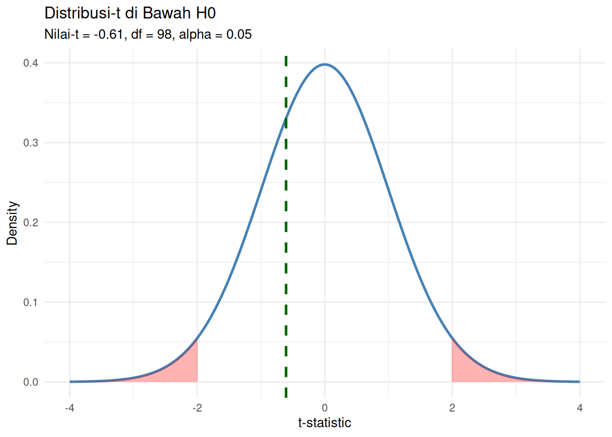
Two Sample t-test
data: fish_upstream$Length_cm and fish_downstream$Length_cm
t = -0.60685, df = 98, p-value = 0.5454
alternative hypothesis: true difference in means is not equal to 0
95 percent confidence interval:
-1.4262226 0.7582226
sample estimates:
mean of x mean of y
28.102 28.436 Menggunakan contoh di atas, tentukan apakah ada perbedaan berat ikan antara kedua populasi!
Latihan Retrieval: Sebelum mengerjakan, ingat kembali:
- Fungsi apa yang digunakan untuk melakukan t-test diR?
- Bagaimana cara memisahkan data berdasarkan kelompok?
- Tuliskan formula t-test yang sudah dicontohkan!
Tangga Petunjuk:
- Petunjuk 1: Gunakansubset()untuk memisahkan data Upstream dan Downstream berdasarkanWeight_g
- Petunjuk 2: Gunakant.test()dengan parametervar.equal = TRUE
- Petunjuk 3: Lihat code t-test untukLength_cmdi atas sebagai referensi
### Independent t-test, cara mudahnya
# Jalankan t-test dan simpan hasilnya
# Hint: Ganti Length_cm menjadi Weight_g di semua tempat
fish_upstream_weight <- subset(fish_data, Lake == "Upstream")
fish_downstream_weight <- subset(fish_data, Lake == "Downstream")
# Ekstrak nilai t dan degrees of freedom
t_result_weight <- t.test(fish_upstream_weight$Weight_g, fish_downstream_weight$Weight_g, var.equal = TRUE)
t_result_weight